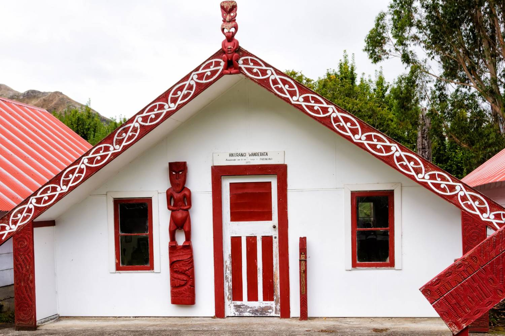
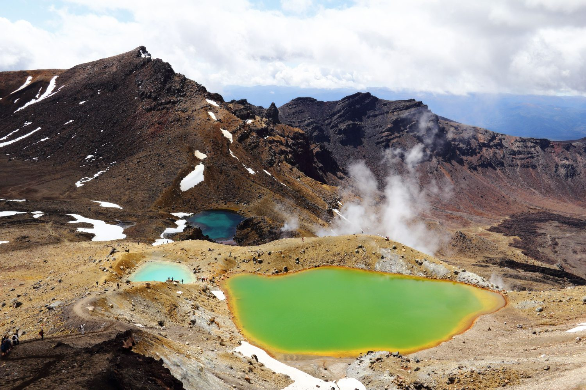

The master guide
Moving to New Zealand
Everything that does not change when you cross a regional boundary — the systems, the money, the paperwork and the year.

What is inside
Sixteen chapters in four parts, plus the regions in brief and a short reference. Three orient you to the country; the rest are the working systems you will actually live inside. Read it once, then read the destination guide for wherever you are going — that one picks up the suburbs, the departments, the commutes and the rents.
Part one · Orienting yourself
- 01Aotearoa in shortTwo islands, five million people, and how far you really are from home.
- 02Choosing where to liveThe main centres, going regional, and how to build a shortlist you can defend.
- 03The southern-hemisphere yearChristmas in summer, the January shutdown, and a school year that starts in February.
Part two · The work
- 04How the health system worksHealth New Zealand, ACC, primary care and the private sector.
- 05Working life as a clinicianRosters, leave, unions and collective agreements, and how pay is actually set.
- 06Visas and residenceEmployer sponsorship, the occupation lists, partner work rights, and the certificates that slow everything down.
- 07Te ao Māori at workWhy it is in your induction, the words you will hear, and how to get it right.
Part three · Money and a roof
- 08Money, tax and bankingIRD numbers, your first payslip, KiwiSaver, and opening an account from abroad.
- 09RentingThe application pack that wins a viewing, bond, and the Healthy Homes standards.
- 10Buying a homeOverseas buyer rules, auctions, LIM reports and builders’ reports.
Part four · Family and practicalities
- 11Schools and educationYear levels, zoning, NCEA, and what it costs even when it is free.
- 12Driving and licencesConverting your licence, and the road rules that catch people out.
- 13Pets and belongingsBiosecurity, the shipping timeline, and what not to put in the container.
- 14Arriving — your first monthThe paperwork in order, finding your people, and the dip at three months.
- 15Being a patient hereEnrolling with a practice, what is free and what is not, and the accident scheme from the other side.
- 16The outdoors, and respecting itThe sun, the weather, the water, and leaving your intentions.
How to use this
Nothing here is advice on your own circumstances, and nothing here is a decision. Where a rule, a rate or a threshold matters we name the authority that owns it rather than printing a number that may have changed since we wrote this — those change more often than a guide can keep up with, and a confident wrong figure is worse than a link.
Chapter one
Aotearoa in short
Two long, thin islands at the bottom of the world, five million people, and one of everything: one health system, one tax system, one set of tenancy rules.
New Zealand is about the land area of the United Kingdom with roughly a thirteenth of the population. That single ratio explains more about daily life here than any other fact. Cities are small. Traffic exists but rarely on the scale you are used to. The coast is close to nearly everywhere, and so is farmland.
It also explains the professional consequence. A country of five million supports fewer hospitals, fewer employers and fewer subspecialty posts than the system you are leaving. For many clinicians that is the appeal — broader scope, more ownership, decisions that stay yours. For others it is a genuine constraint worth checking before you commit.
The distance is the real adjustment
Auckland to London is roughly twenty-four hours in the air plus a stop. That is not a detail; it is the thing that shapes how often you will see the people you are leaving. Families who settle well tend to have talked honestly about this before they left rather than discovering it in the second year.
What softens it is that everyone around you has done something similar. New Zealand is a country of arrivals, and roughly a quarter of the people you meet were born somewhere else. Nobody will find your accent remarkable and nobody will think you strange for missing home.
The most common thing people tell us after a year: the distance was harder than expected, and everything else was easier.
Two islands, two characters
Most of the population and most of the big hospitals are in the North Island, along with the warmer weather and the subtropical north. The South Island holds the mountains, the fjords, the great walks and the smaller populations — and a set of clinical jobs where you are further from a tertiary centre than you may ever have been.
How big it actually is
Longer than you think and narrower than you think. Auckland to Wellington is a full day’s drive or an hour’s flight; Auckland to Invercargill is most of the length of the country. Domestic flying is routine, frequent and the normal way to cross the islands, and the Cook Strait ferry between Wellington and Picton is a three-hour crossing that takes cars.
Distances on a map understate driving times consistently. Roads wind, they climb, and outside the main corridors they are single-carriageway. A three-hundred-kilometre journey is four hours, not three.
Who else lives here
Roughly a quarter of people were born overseas, and in Auckland it is closer to two in five. Māori are the indigenous people and a significant part of the population; there are large Pacific and Asian communities, and long-established British, Indian, Filipino and South African ones. Whatever you are, you will not be the only one, and in a hospital you will almost certainly find someone from home.
Chapter two
Choosing where to live
Most people choose a job and inherit a city. It is worth doing it the other way round at least once, because the place is what you live in every day.


There are four main centres — Auckland, Wellington, Christchurch and Hamilton — and then a long list of provincial cities and regional centres that are, for a clinician, often the more interesting proposition. Auckland is the largest and most expensive, and has the deepest subspecialty market. Wellington is compact, walkable, windy and political. Christchurch is flat, rebuilt and the gateway to the South Island. Beyond them the trade-off is consistent: cheaper housing, shorter commutes, broader scope, fewer colleagues.
Build the shortlist on your life, not the map
Four questions get people most of the way there. What size of department do you actually want to work in? How far from a tertiary centre are you comfortable being? What do you want to be able to do on a Saturday without planning it? And what does your partner need from the place — because their options narrow faster than yours in a small city.
The mistake worth avoiding
Choosing on housing cost alone. The cheapest housing is in the places with the fewest jobs for a partner and the longest flight to an international airport. Those costs are real too; they just do not show up in a rent comparison.
Going regional, honestly
Regional posts are where the broadest scope and the best housing value sit, and they are also where you are furthest from a colleague in your own specialty. The things worth establishing before you say yes: how many of you there are, who covers you on leave, what the transfer arrangements actually are at three in the morning, and how far the nearest tertiary centre is in winter weather rather than on a map.
The partner question decides more shortlists than the job does
In a smaller city a clinical job may be plentiful while your partner’s field has two employers in the region. Research their market with the same seriousness you research your own, and do it before the shortlist rather than after the offer. Partner work rights depend on your visa class, which is chapter six — the two questions are connected.
Your first move need not be your last
Registration is national and portable, and the health service is one employer across the country. Moving region after two years is ordinary here and carries none of the friction it might elsewhere. That takes a great deal of pressure off the first decision.
Chapter three
The southern-hemisphere year
Christmas on the beach, a country that genuinely stops in January, and a school year that starts in February. The calendar is the first thing that catches people out.

Seasons invert. Summer runs December to February, winter June to August. Christmas falls in the middle of the long school holiday, which means the whole country takes its main break at once. From shortly before Christmas until late January, expect reduced clinics, skeleton administrative staff, and a genuine difficulty getting anything non-urgent processed.
Plan your arrival around this rather than into it. Arriving in mid-January sounds appealing and means your bank, your IRD registration, your children’s school enrolment and your car purchase all queue behind a country coming back to work.
The school year
The academic year starts in late January or early February and ends in December, in four terms with two-week breaks between them. If your children are mid-year in the northern hemisphere, one of them will effectively repeat or skip part of a year. Schools handle this constantly and sensibly, but it is worth raising at enrolment rather than after.
Public holidays, and the ones that move
There are around eleven national public holidays, plus a regional anniversary day that differs by province — so your colleagues in another region get a long weekend you do not. Waitangi Day in February and ANZAC Day in April are the two with the most weight; Matariki, marking the Māori new year, is the newest and moves with the lunar calendar. Where a holiday falls at a weekend it is generally ‘Mondayised’.
The outdoor year
The rhythm of the year is outdoors more than indoors, and it shapes weekends more than any calendar. Summer is beaches, tramping, cricket and the long days. Autumn is the best walking weather and Central Otago turning gold. Winter is skiing in both islands, rugby, and Matariki. Spring is unpredictable and everyone gardens anyway. The point is not the activities: it is that the country empties outdoors when the weather allows, and joining in is how you meet people.
Winter is a housing question
Winter is mild by northern standards and the housing stock is less prepared for it. Older homes can be cold and damp in ways that surprise people from colder countries with better insulation. This is why the Healthy Homes standards in chapter eight matter more than they sound like they should.
Chapter four
How the health system works
One national health service, a no-fault accident scheme that exists nowhere else, and a private sector that is smaller than you expect.

Public hospital care is delivered by Health New Zealand | Te Whatu Ora, a single national organisation covering every region. For an internationally qualified clinician this has one large practical consequence: pathways, pay scales and employment terms are national rather than negotiated hospital by hospital, so comparing two posts is genuinely comparing the work and the place rather than the package.
ACC changes how injury works
The Accident Compensation Corporation is a no-fault scheme covering treatment and rehabilitation for injury, for everyone, regardless of how the injury happened. It has no equivalent in most systems clinicians arrive from. It affects referral routes, funding and paperwork, and it is one of the genuinely new things you will learn in your first month.
Primary care sits partly outside
General practice is largely privately owned and publicly subsidised, so patients usually pay a part-charge to see a GP while hospital care is free at the point of use. Prescriptions carry a small standard charge. This mixed model is normal here and is worth understanding before a patient asks you about cost.
Where the sectors sit
Public hospitals do the acute work, the complex work and most of the training. Private hospitals are mostly elective and are smaller in scale than in many systems, though private imaging, surgery and specialist consulting are all real markets. Primary care is general practice, largely privately owned. Aged residential care is a substantial separate sector. Community and iwi providers deliver a great deal of frontline care, particularly in Māori and Pacific communities, and are more central to how services work than an overseas clinician tends to expect.
What you will notice in your first fortnight
Fewer layers between you and a decision. Nurses with more autonomy than you may be used to. Pharmacists and allied health colleagues expected to challenge you, and thanked for it. Documentation systems that differ hospital by hospital despite one national employer. And a genuine expectation that you will ask when you do not know something — which is worth using early rather than performing competence.
What to ask at interview
How far is the nearest tertiary centre, and what gets transferred? What does the on-call actually look like, as opposed to how it is rostered? Who covers you when you are the only one of your specialty on site? Is there protected non-clinical time, and is it real?
Chapter five
Working life as a clinician
Pay is set by collective agreement rather than negotiated, unions are normal and uncontroversial, and consultants are on the floor.

Most clinical staff are employed under a collective agreement negotiated between the health service and the relevant union — the ASMS for senior medical staff, APEX for many allied health and technical professions, and the nursing union for nursing. Your pay step is determined by the scale in that agreement and your assessed experience, not by how well you negotiate.
That cuts both ways. It means transparency: you can read the agreement before you accept, and the person next to you is on the same scale. It also means far less room to bargain than you may be used to, and the negotiable parts are usually relocation support, start date, and how your prior experience is assessed onto the scale.
The one number worth chasing
Not the salary — your step on the scale. How your overseas experience is credited when you are placed on the ladder is the single largest variable in what you are actually paid, and it is assessed rather than fixed. Ask how it will be calculated, and what evidence supports a higher step.
Culture
Departments tend to be flatter than in larger systems. First names are standard, including for consultants. Nobody is impressed by working through a break, and visible exhaustion tends to be treated as a rostering problem rather than dedication. Direct, unceremonious feedback is normal and is not personal.
Leave, and the expectation you take it
Statutory annual leave plus public holidays is the floor, and clinical agreements generally improve on it, along with study leave and professional development funding. The cultural point matters as much as the entitlement: leave here is expected to be taken, not accrued as a badge.
Chapter six
Visas and residence
Your employer sponsors you, so this follows the job rather than preceding it — and for many health roles the residence route is shorter than people expect.

Almost every clinician arrives on an employer-sponsored work visa. That has one important consequence for sequencing: you do not apply for a visa and then look for a job. You secure the role, your employer — who must hold accreditation to sponsor migrants — supports the application, and the visa follows. Registration usually runs alongside it rather than before it.
The residence question, asked early
New Zealand operates lists of occupations it is short of. Roles on the highest tier can offer a direct route to residence rather than a wait; others sit on a work-to-residence footing where a defined period of employment leads to eligibility. Many health occupations appear on these lists, but which tier and which conditions apply is specific to the role, the pay and sometimes the registration held — so confirm your own occupation against the current list rather than assuming, and confirm it again before you sign, because the lists are revised.
This matters more than it sounds. The difference between a direct residence route and a multi-year work-to-residence path changes how you think about schools, buying a house, and whether your partner can work without restriction.
Ask the question in this form
Not “can I get residence?” but: which occupation code will this role be sponsored under, which list is it currently on, what is the pay threshold attached to it, and what would my partner’s work rights be on the resulting visa? Those four answers together tell you what the move actually is.
Partners and children
Partner work rights and children’s student status both flow from your visa class rather than being separate applications with their own logic. On some visas a partner has open work rights; on others they are more restricted. Children of most work-visa holders are treated as domestic students at state schools, which is a substantial financial difference from being charged international fees. All of this is determined by your visa type, so establish it before you plan a household budget.
Medicals, police certificates and time
Expect a medical examination with an approved panel physician, chest x-ray where required, and police certificates from every country you have lived in for a meaningful period — usually twelve months or more, and often counting back a decade. These are the same certificates your professional council will want, so order them once and use them twice. They are also the single most common reason a start date slips: some countries issue in days, others in months, and most certificates expire.
Declare things
Health conditions and past convictions are declared, not hidden. Immigration and your regulator both deal with these routinely and both care far more about honesty than about a spotless record. Non-disclosure is what ends applications; the thing itself very rarely does.
Chapter seven
Te ao Māori at work
This is not a diversity module you can skim. It is part of how healthcare is practised here, and getting it wrong is noticed.

Te Tiriti o Waitangi — the Treaty of Waitangi — is the founding agreement between Māori and the Crown, and it carries obligations that run through public healthcare rather than sitting beside it. You will meet it in your induction, in service planning, and in the way equity is discussed on the ward. Treating it as paperwork is the most common early misstep by clinicians arriving from elsewhere.
Practical things that matter on day one
Learn to pronounce place names and colleagues’ names properly; effort is genuinely appreciated and getting it casually wrong is not. Expect to hear te reo Māori in everyday use — kia ora, whānau, karakia before a meeting — and expect the concept of whānau to be broader than the word family: decisions are frequently made collectively rather than by an individual patient alone.
Understand that Māori health outcomes are worse across most measures, that this is understood as a system failure rather than a patient one, and that closing that gap is an explicit objective of the service you are joining. You will be expected to be part of it, not an observer of it.
Nobody expects fluency. Everybody notices effort, and everybody notices its absence.
Chapter eight
Money, tax and banking
Tax comes off at source, the system is simpler than most, and one three-letter number unlocks all of it.
Income tax is deducted by your employer under PAYE, so for most salaried clinicians there is no return to file. The number that makes this work is your IRD number, issued by Inland Revenue. Without it you can be taxed at a higher no-declaration rate, so it belongs at the very top of your first-fortnight list — before furniture, before a car.
KiwiSaver
KiwiSaver is the voluntary retirement savings scheme. You contribute a percentage of your pay, your employer contributes as well, and the government makes an annual contribution if you meet the criteria. New employees are generally enrolled automatically with a window to opt out. Whether it is right for you depends on how long you intend to stay and what you already hold elsewhere, and it is worth a conversation with someone qualified rather than a guess.
Open the account before you fly
Several New Zealand banks let you open an account from overseas before you arrive, then activate it with identity documents once you land. Doing this early means your first salary has somewhere to go and your rental application has a local account to name. It is one of the highest-value things you can do while still at home.
Cost of living, honestly
Groceries surprise people, particularly dairy, meat and anything imported. Fruit and vegetables are excellent and cheap in season and expensive out of it. Petrol is dearer than in North America and comparable to Europe. Cars, electronics and clothing cost more than you expect because almost everything is shipped a long way. Eating out is not cheap, and tipping is not expected.
Against that: housing outside Auckland goes further, commutes are short, childcare is subsidised for some ages, and the things people actually do at weekends — beaches, tracks, parks — are free. Whether you are better off is genuinely a household-by-household question, which is why we built a calculator rather than publishing an average.
Money across two countries
You will probably be moving money internationally for a while — a property sale, a pension, family support. Bank transfer fees and exchange spreads on large sums are worth an hour of research; specialist transfer services routinely beat the banks. If you hold pensions, property or investments in another country, get advice from someone who understands both tax systems before you move, not after. This is the single most common thing people wish they had done earlier.
The first three months
Budget for a gap. Bond and rent in advance, a car, appliances, school uniforms, and the weeks between arriving and your first full pay all land at once. This is the single most underestimated part of the move, and it is the reason our cost calculator exists.
Chapter nine
Renting in New Zealand
A competitive market where the application pack decides it, and a warmth standard you should actually check.

Most arrivals rent first, and in the main centres good properties attract several applicants at one viewing. The decision is usually made on the paperwork rather than on the conversation, so the pack matters: identity, proof of income or your signed employment offer, references from previous landlords, and a local bank account.
Bond and what is normal
A bond is standard and is lodged with Tenancy Services rather than held by the landlord, which protects both sides. Rent is usually paid weekly or fortnightly rather than monthly, which quietly changes how your budget looks. Letting fees to tenants are not permitted.
Ask about Healthy Homes before you sign
The Healthy Homes standards set minimum requirements for heating, insulation, ventilation, moisture and draught stopping in rental properties. Older housing is where the cold and damp complaints come from, so ask directly what the property has and what it costs to heat in winter. A house that is cheap to rent and expensive to warm is not cheap.
Somewhere to land first
Almost nobody signs a twelve-month tenancy from overseas, and you should not try. Book four to six weeks of temporary accommodation — serviced apartment, motel, short-term let — and view properties once you are here. Landlords and agents strongly prefer applicants they have met, and you will make a much better decision about a suburb after a week of driving it than after a month of photographs. Some employers contribute to temporary accommodation as part of relocation support; ask, because it is rarely volunteered.
Getting connected
Power and gas are competitive and you choose your retailer; switching is quick and comparison sites make it easy. Winter power bills in an older, poorly insulated house are the bill that shocks people, so ask about heating costs before you sign. Broadband is generally fibre in urban areas and good; rural is more variable. Mobile plans are straightforward and a local number is worth getting in week one, because rental applications, banks and schools all want one.
Furnished is rare
Most long-term rentals are unfurnished, often without white goods. Factor a full household setup into the first month unless your container is arriving promptly — and see chapter twelve, because it usually is not.
Chapter ten
Buying a home
Auctions are common, the checks are on you, and whether you may buy at all depends on your residence status.

Rules restricting purchases by people who are not citizens or residents are real and they change, so your eligibility depends on your visa and residence status at the time you buy. Establish this before you spend money on anything, because it determines whether the question is which house or whether a house.
Auctions and the absence of a chain
Much residential property is sold at auction, which means an unconditional bid and no cooling-off. That reverses the usual order: your finance, your building inspection and your legal review all need to be done before you raise a hand, not after. There is no chain in the British sense, which removes one familiar problem and adds a different kind of pressure.
Two reports worth paying for
A LIM report from the local council sets out what the authority knows about the property — zoning, consents, flood and erosion risk, drainage. A builder’s report covers condition, and in a country with weathertightness history and active seismic risk it is not optional. Both cost money and both are cheaper than the alternative.
Chapter eleven
Schools and education
Free at state schools for most work-visa families, zoned by address, and generally very good — with costs that are not fees.

State schooling is government funded, and children of most work-visa holders are treated as domestic students rather than international ones. Confirm your own entitlement against your specific visa, because this is precisely the kind of detail that decides a household budget and it varies by visa type.
Preparing children for the move
The practical part is the easy part. What takes longer is the goodbye, and children need it done properly rather than briskly: time to tell their own friends, something concrete to look forward to, and a say in something real, even if it is only their bedroom. Keep one or two rituals from home deliberately intact through the first months.
Teenagers find this hardest and show it least. They are being asked to give up a social world they built themselves at exactly the age it matters most, and ‘it will be an adventure’ does not answer that. What helps is honesty that it is a real loss, a plan for staying in touch that they design, and patience for considerably longer than you expect.
Flying with children
It is a long way — twenty-four hours plus a stop from Europe. Break the journey with a stopover if you can; a night in a bed resets everyone. Bring more entertainment, snacks and spare clothes than seems reasonable, and expect jet lag on arrival to run for the best part of a week in both directions. Do not schedule anything important for the first two days.
Early childhood education
Early childhood education is widely available through kindergartens, education and care centres, kōhanga reo and home-based options, and government funding covers a number of hours a week for children in the older preschool ages. Popular centres have waiting lists measured in months, so enquire before you arrive rather than after.
Zoning decides more than you think
Popular schools operate enrolment zones, and living inside the zone is what secures a place. This means the school decision and the housing decision are the same decision, made in that order. Work out the schools first, then look at houses.
Years, NCEA and the practical differences
Year levels are numbered one to thirteen and are age-based, so your child’s year is usually straightforward to establish. Senior secondary works towards NCEA, which is structured differently from A-levels or the IB — more internal assessment across the year. Schools are experienced at placing mid-year arrivals; ask how they will handle it rather than assuming.
Free, but not costless
Expect voluntary donations, activity and trip costs, uniforms, stationery and a device. None of it is tuition and all of it is real. Ask the school for its actual annual figure rather than working from the fee page.
Chapter twelve
Driving and licences
You can drive on your overseas licence for a limited period, then you convert. And a car is not optional in most of the country.

Visitors and new arrivals may generally drive on a valid overseas licence for a defined period after arrival, after which you must convert to a New Zealand licence. Depending on the country that issued yours, conversion may be straightforward or may require theory and practical testing. Check your own country’s treatment early, because the clock starts on arrival and the testing queue is not instant.
The rules that catch people out
Drive on the left. Give-way rules at intersections and roundabouts differ from what you may be used to and are worth learning properly rather than by inference. Many rural roads are narrow, unsealed or single-lane-bridged, and the open-road speed limit assumes competence you may not yet have on that surface. Journey times are consistently longer than a map suggests — the roads wind.
Buying a car
Check the vehicle has a current warrant of fitness and registration, and that there is no money owing against it. Independent inspections are cheap and widely available. Imported used vehicles are common and perfectly normal.
Chapter thirteen
Pets and belongings
The strictest biosecurity you will have met, and a container that takes longer than you want it to.

New Zealand’s biosecurity rules are among the world’s tightest, and they are enforced. This applies to your pets, your food, your outdoor equipment and anything with soil on it. It is not bureaucracy for its own sake — an island ecosystem with no native land mammals has a great deal to lose.
Pets: start earlier than feels sensible
Bringing a cat or dog involves an approved route from your country, vaccinations and testing on a defined schedule, documentation, and a period in quarantine on arrival. The schedule is measured in months, not weeks, and missing a step can reset it. Begin this before you begin anything else about the move; it is the longest lead time in the whole process.
Shipping
A container by sea takes a long time and then clears customs and biosecurity, which takes longer. Assume you will be living without your possessions for a stretch after you arrive and plan a minimal setup accordingly. Air freight a small essentials box if the budget allows — work shoes, a few kitchen items, the children’s things that matter.
What not to pack
Anything with soil on it — garden tools, walking boots, tent pegs, bicycles — unless it is scrupulously clean. Wooden items, seeds, plant material and most foods are restricted or prohibited. Clean everything before it goes in the container, and declare honestly on arrival: the penalties are for non-declaration, not for owning muddy boots.
Chapter fourteen
Arriving — your first month
The paperwork in the order it needs doing, and the part nobody prepares you for: the dip at three months, and how people get through it.

Week one, in order
- Activate the bank account you opened from overseas, with your passport and visa.
- Apply for your IRD number, and give your employer your tax code before your first pay run.
- Get a local mobile number. Rentals, schools and banks all want one.
- Enrol with a general practice. Do it before anyone is ill, because enrolment takes time and enrolled patients pay less.
- Enrol the children at school, taking proof of address for zoning.
- Check the deadline for converting your driving licence, and diarise it.
None of this is difficult and all of it is slower than you expect, particularly if you have arrived in January. Do it in this order and the rest of the month is yours.
Finding your people
This is the part that decides whether the move works, and it is the part no relocation package covers. What consistently works: a sports club, however badly you play; a church, temple, mosque or community group if faith is part of your life, and most cities have established communities across every major tradition; your children’s school gate, which is the fastest route into a neighbourhood; and saying yes to invitations for the first six months even when you are tired, because the invitations thin out if you decline them.
Look for your own diaspora too. Most cities have active British, Indian, Filipino, South African, Irish and Pacific communities, and there is nothing disloyal about wanting a familiar accent occasionally.
Almost everyone dips somewhere between three and six months, when the novelty has gone and the friendships have not arrived yet. It is normal, it is temporary, and it is not a sign you made a mistake.
The dip, and what helps
The pattern is consistent enough to plan for. The first weeks are busy and exciting. Then the admin is done, the visitors have gone, winter arrives, and a Tuesday evening in a house you do not know yet can feel very far from home. What helps is knowing it is coming, having one thing in the diary each week that is not work, keeping a regular call home rather than an occasional one, and telling someone here that you are finding it hard — because they almost certainly did too.
And it lifts. Ask anyone who has been here two years: the second winter is a different experience from the first.
Chapter fifteen
Being a patient here
You will spend your career inside this system and, sooner or later, your family will be inside it as patients. The two experiences are not the same, and nobody briefs you on the second.

Enrol with a general practice in week one
Primary care runs on enrolment. Enrolled patients pay a lower part-charge, get continuity with one practice, and can access after-hours arrangements through it. Unenrolled patients pay a casual rate that is markedly higher. Practices in growing areas periodically close their books, so this is genuinely a week-one task rather than a when-we-need-it one — and it is the single most common thing new arrivals leave too late.
What is free and what is not
Hospital care, including emergency care, is publicly funded for those eligible. General practice carries a part-charge. Prescriptions carry a small standard co-payment. Adult dental care is essentially private and can be a shock if you are used to a subsidised system; children’s dental care is publicly provided. Optometry is private. Physiotherapy is often subsidised where an injury falls under the accident scheme and private otherwise.
Check your own eligibility
Eligibility for publicly funded care depends on your visa and how long it runs, not on paying tax. Most people on longer work visas and their dependants are eligible, but confirm your household’s position with Health New Zealand rather than assuming, and consider travel or private cover for any gap between arriving and becoming eligible.
Accidents are a different system
Injury is handled by the no-fault accident scheme rather than by the health system in the usual sense, and it covers treatment, rehabilitation and sometimes lost earnings for anyone injured in New Zealand, however it happened. You do not need to prove fault and you do not need insurance. As a clinician you will complete a great deal of its paperwork; as a parent whose child comes off a bike, you will be quietly grateful for it.
After hours, and knowing where to go
Most cities have urgent-care or after-hours clinics that sit between general practice and an emergency department, and using them appropriately is the local norm. There is also a free twenty-four-hour national telephone health advice line, which is genuinely useful at two in the morning with a feverish child in a country whose services you do not yet know.
Mental health, including your own
Services exist through primary care, publicly funded specialist services and the private sector, and waiting times vary considerably by region. Employer-funded employee assistance programmes are common and confidential, and worth knowing about before you need them. Relocation is one of the more significant stressors there is, and clinicians are famously poor at seeking help for themselves.
Chapter sixteen
The outdoors, and respecting it
The reason a great many people come, and the thing that most often catches them out. The sun here is genuinely dangerous and the weather changes faster than you will believe.

Being outdoors here is not a hobby you schedule; it is the ordinary shape of a weekend. Tracks, coast and bush are close to nearly every city, national parks are extensive and free to enter, and the network of Department of Conservation huts makes multi-day walking accessible to anyone reasonably fit. Cycling, sailing, surfing, skiing, fishing and diving are all mainstream rather than niche.
The sun is the real hazard
Take this seriously even if you take nothing else here seriously. Ultraviolet levels are considerably higher than at comparable northern latitudes — a thinner ozone layer, clean air and a closer summer sun. Skin cancer rates are among the world’s highest. You can burn in under twenty minutes in summer, including on an overcast day, including through car windows. Sunscreen, a hat, sleeves and shade between the late morning and mid-afternoon are not fussiness; they are the local standard and children are taught it at school.
The weather turns
Mountain and coastal weather changes with very little warning, and people who are competent hill walkers elsewhere get into trouble here by assuming conditions will hold. Carry layers, waterproofs, food and a torch on anything longer than a stroll. Check the forecast on the day rather than the day before.
Leave your intentions
Tell someone where you are going and when you expect to be back, every time, even on a day walk. There is a national outdoor intentions system for exactly this, and search and rescue volunteers spend a great deal of time looking for people who told nobody. A personal locator beacon can be hired cheaply from most outdoor shops and visitor centres.
Water deserves respect
Rivers rise fast and are colder and stronger than they look. Beaches can have severe rips, and only some are patrolled — swim between the flags where they exist. Drowning rates here are high for a developed country, and a disproportionate number of those affected are recent arrivals swimming somewhere unpatrolled. If your children have not learned to swim, do it early: lessons are widely available and it is treated as a basic life skill rather than an optional one.
Tiaki — the promise to care for the place
There is a national commitment called the Tiaki Promise: to care for the land, travel safely, respect culture and leave places as you found them. It is not a marketing line so much as a social expectation. Stay on tracks, carry your rubbish out, clean your boots between forests to avoid spreading disease, keep away from wildlife, and do not drive on beaches or dunes because it is possible. People will say something if you do not, politely and clearly.
The regions
Where you might actually live
Thirteen regions, a line or two each. This is deliberately only enough to build a shortlist — every one of them has its own full guide covering suburbs, departments, commutes, rents and weekends.
How to use this list
Pick three, not one. Then read the full destination guide for each — that is where the suburb-by-suburb detail, the local rents, the commuting and the school zoning live. Registration is national and the health service is one employer, so moving region later is ordinary and easy.
A short reference
Things worth knowing now
The handful of practical facts people look up in their first week, and the pronunciation that will make your first day easier.

Emergencies
Dial 111 for police, fire or ambulance. It is free from any phone, including a locked mobile. For urgent but non-emergency health advice, Healthline is a free 24-hour national service — a useful number to have in your phone before you need it.
Saying Māori words properly
Every vowel is pronounced, and always the same way: a as in car, e as in egg, i as in tree, o as in or, u as in food. A macron (ā) lengthens the vowel rather than changing it. Wh is usually close to an English f, and ng is the sound in the middle of singer, including at the start of a word. Stress usually sits on the first syllable.
That is genuinely most of it. Place names decompose into parts once you know the vowels, and colleagues will help if you ask.
Words you will hear on your first day
- Kia ora — hello, thanks, and general goodwill
- Mōrena — good morning
- Whānau — family, in the broad sense
- Aotearoa — New Zealand
- Kai — food
- Karakia — a blessing, often opening a meeting
- Mihi — a greeting or acknowledgement
- Ngā mihi — regards, signing off an email
- Tangata whenua — people of the land
- Hui — a meeting or gathering
- Marae — a Māori communal meeting place
- Ka pai — good, well done
Nobody expects fluency in your first month. Using two or three of these properly, rather than a dozen badly, is what registers.
And then
Ready, or nowhere near ready.

Both are a perfectly normal place to begin, and neither one gets a sales pitch. Some people read a guide like this and decide inside a fortnight. Others hold the idea for years. What they have in common is the questions underneath — whether a partner will find work, whether the children will forgive the move, and what happens to the people left behind.
Everything Ethicare publishes is free to use, whether you find your role through us, apply directly to an employer, or work with another agency entirely. If it would help, we will put you in touch with someone in your own profession who has already made this move — not a case study, an actual conversation, including the parts they found hard.
This guide is general information for internationally qualified healthcare professionals, not advice on your individual circumstances. Rules, rates and thresholds change: confirm registration with your professional council, entry and work rights with Immigration New Zealand, tax with Inland Revenue, tenancy with Tenancy Services, driving with Waka Kotahi, biosecurity with the Ministry for Primary Industries, and pay against the relevant collective agreement. Ethicare Resourcing Ltd, Company No 14646354, Office 1, One Coldbath Square, London EC1R 5HL.